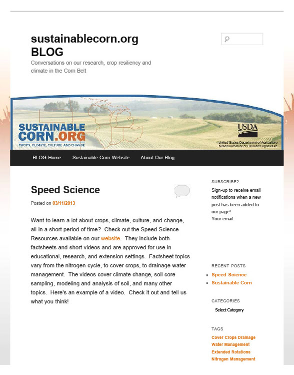
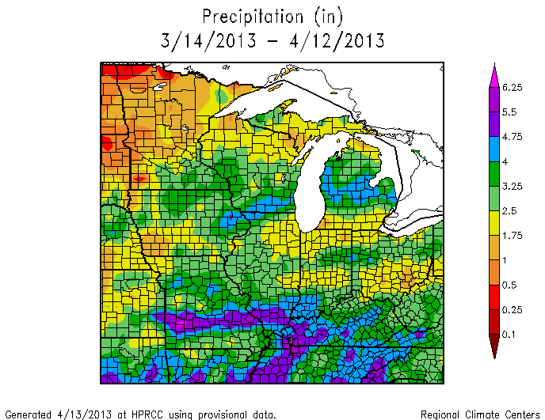
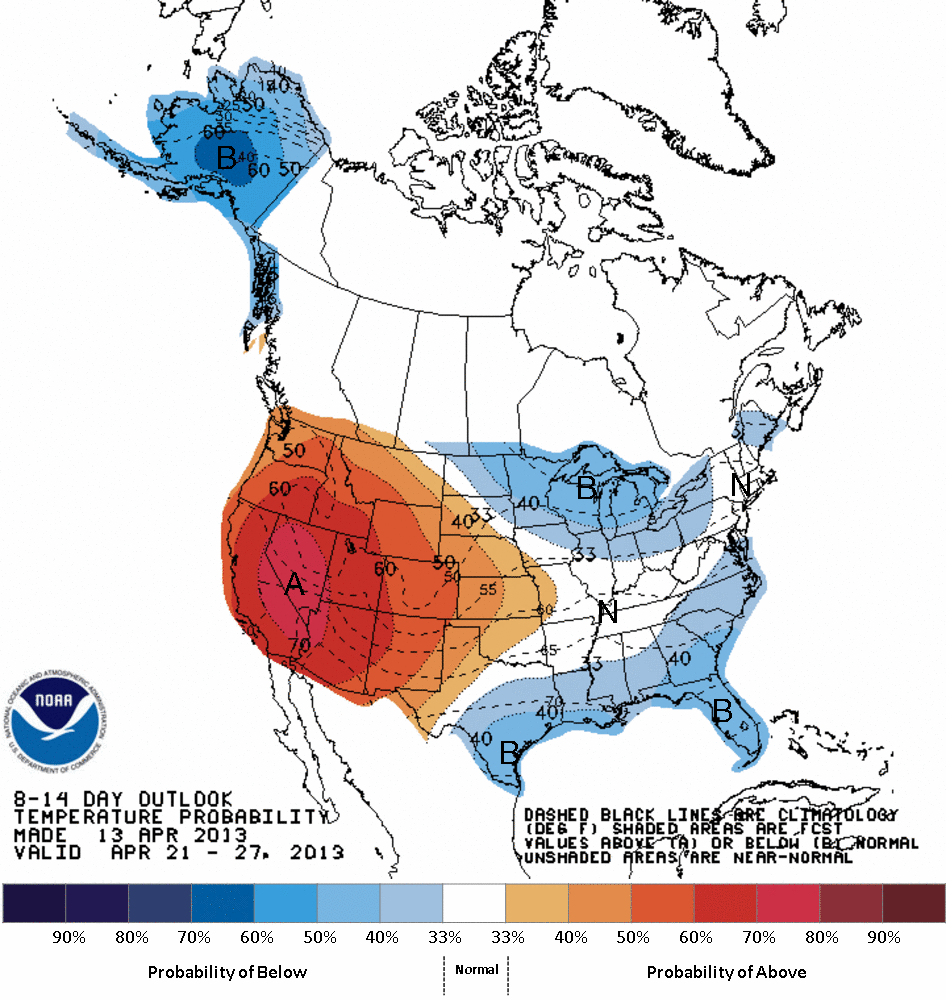
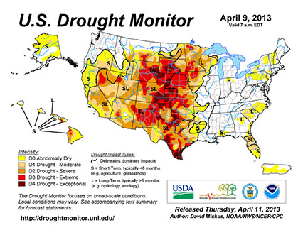
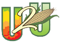

Find us on Twitter
Find us on TwitterWeather Outlook & Current Conditions in the Corn Belt
|  | Follow our blog for weather outlook and current conditions in the Corn Belt. Midwest weather blogposts by Dennis Todey, State Climatologist and Associate Professor, Agriculture and Biosystems Engineering, South Dakota State University. |
|  | Current Climate Summary Maps... Available from the High Plains Regional Climate Center, provides current precipitation and temperature information for all states, including the Corn Belt states, in the form of maps. |
|  | NOAA Climate Prediction Center... Provides regional weather outlooks for the U.S., including, 6-10 temperature and precipitation predictions, drought monitor, and much more. |
| Horizon Point... Provides precise weather information for Missouri farmers. Site-specific weather reports and advisories are sent to farmers who sign up for emails. Reports contain rainfall runoff estimator, weed and insect scouting aids, nitrogen application chart, planting depth soil temperature and more. | |
|  | Current U.S. Drought Monitor... Maps, which are based on data analysis, are released each Thursday at 7:30 a.m. Central Time. The monitor is produced in partnership between the National Drought Mitigation Center at the University of Nebraska-Lincoln, the US Department of Agriculture, and the National Oceanic and Atmospheric Administration. |
|  | U2U Decision Support Resources ... Decision support resources that allow farmers and agricultural advisors to examine the financial, production, and environmental outcomes of short-term farm management decisions and long-term investment planning. |